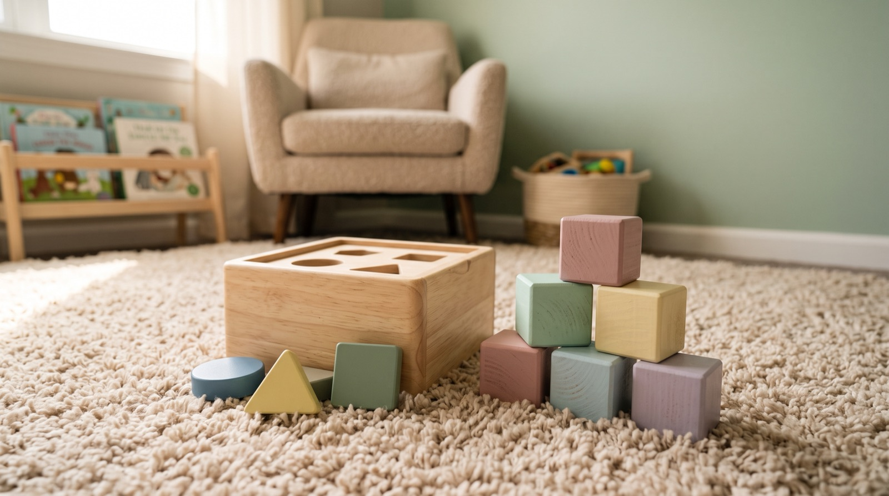
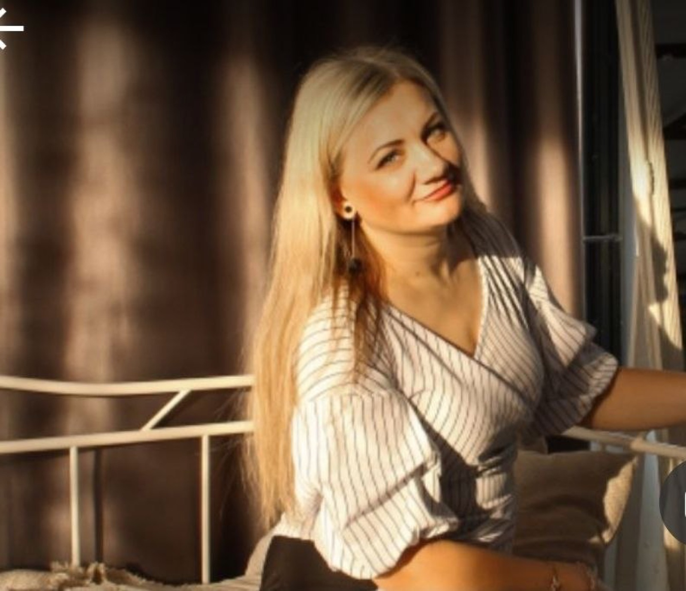
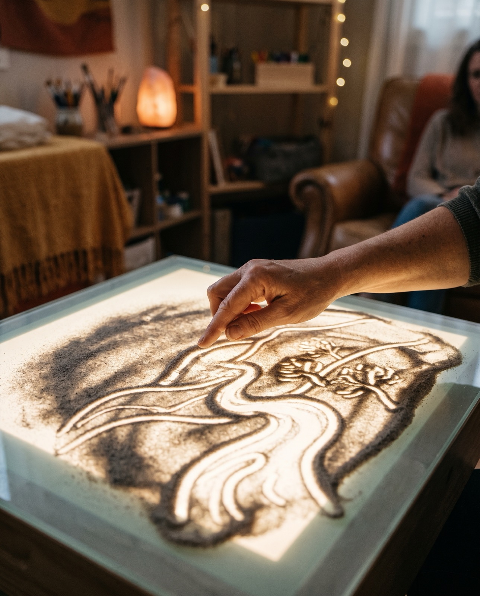
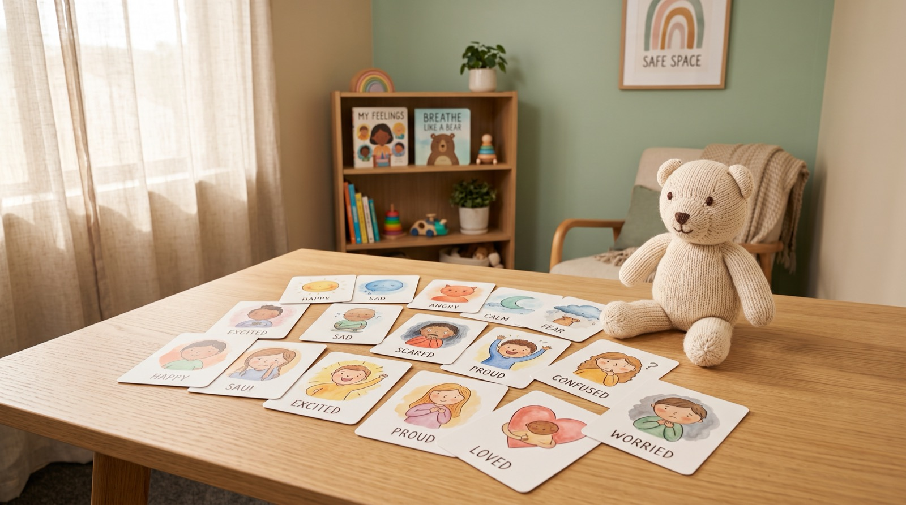
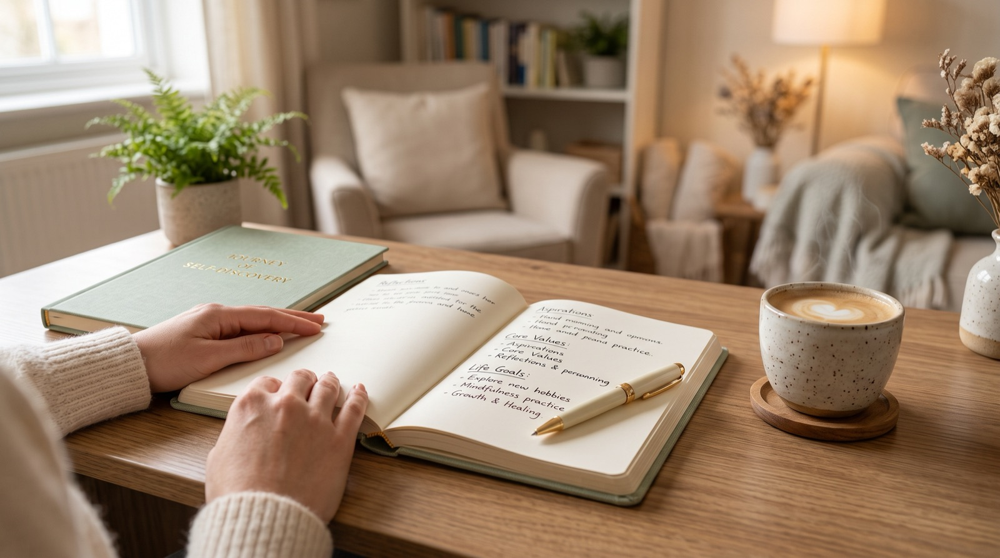

«Хорошо рядом с мамой»
Для детей 2–3 лет. Развитие высших психических функций, мелкой моторики рук, речи и творческих способностей.
40 минут · 20 BYN
Индивидуальные консультации и программы развития для детей и взрослых. Первый шаг — звонок или сообщение в Telegram, дальше мы берём разговор на себя.
Перезвоним и ответим на вопросы о формате работы.

Психолог высшей категории, основатель центра «Ступени развития». Более 20 лет я помогаю детям и взрослым справляться с эмоциональными трудностями, обретать уверенность и выстраивать гармоничные отношения.
В своей практике я опираюсь на доказательные и бережные методы: когнитивно-поведенческую терапию, песочную и арт-терапию, а также элементы психоанализа. Я постоянно совершенствую свои навыки, выступая участником международных конференций, и являюсь автором множества статей и книги по психологии и педагогике детства.
Выберите подходящий формат. Мы пройдём этот путь вместе.
Для детей 2–3 лет. Развитие высших психических функций, мелкой моторики рук, речи и творческих способностей.
40 минут · 20 BYN
Для детей 2–12 лет. Стимуляция интеллектуальных и творческих процессов, преодоление негативных эмоций.
30 минут · 15 BYN
Для детей 5–10 лет. Гармонизация эмоций (тревожности, страхов, агрессии), коррекция поведения, улучшение внимания.
45–60 минут · от 20 BYN
Для детей 4–5 лет. Развитие интеллекта и эмоций, коррекция поведения, развитие коммуникативных навыков.
45 минут · 20 BYN
Работа с детьми (занятия и диагностика) и взрослыми. Индивидуальный подход к решению психологических запросов.
50–60 минут · от 40 до 60 BYN
Для взрослых. Осознание ценности своей жизни, расстановка приоритетов. Поиск себя, осознание своих возможностей.
6 встреч по 90 мин · 45 BYN
По телефону, в Telegram или Viber. Коротко скажите, с чем хотите прийти — этого достаточно.
Уточняем детали и отвечаем на вопросы о формате.
Подбираем удобное время под ваш запрос.
Заявка на сайте не нужна: достаточно телефона или сообщения. Имя и номер никуда не сохраняются, пока вы сами не напишете.
Юридический и почтовый адрес другой: г. Гродно, ул. Вишневецкая, 16-48. Он указан в подвале и в договоре оферты. На приём приходят на Советскую, 14.
Условия оказания психологических услуг, порядок расчётов и правила переноса консультаций.
Читать договор оферты